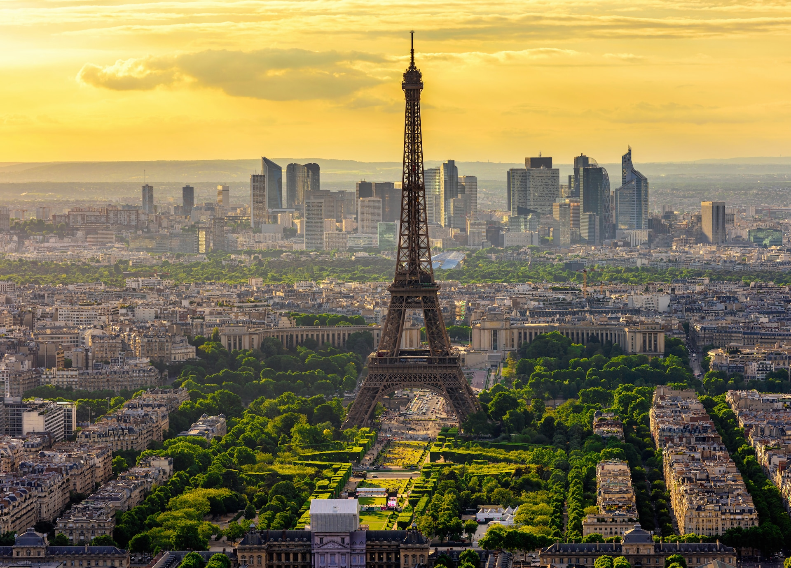

Про місто

Париж — столиця Франції, одне з найромантичніших і найкультурніших міст світу. Його називають «Містом світла».
Чому я обрав Париж
Париж зачаровує атмосферою. Прогулянки вздовж Сени, затишні кав’ярні, музеї світового рівня та неповторна архітектура роблять його особливим.
Цікаві факти
- Ейфелева вежа була побудована у 1889 році.
- У Парижі знаходиться Лувр — найбільший музей світу.
- Місто має понад 400 парків і садів.
- Париж є одним з найвідвідуваніших міст планети.
Визначні місця
- Ейфелева вежа
- Лувр
- Нотр-Дам де Парі
- Тріумфальна арка
- Монмартр
Особиста оцінка
Оцінка: 9.5/10
Париж — місто, яке хочеться відвідувати знову і знову. Воно надихає на творчість і мрії.
Додаткова інформація
Більше про Париж можна дізнатися на Вікіпедії.